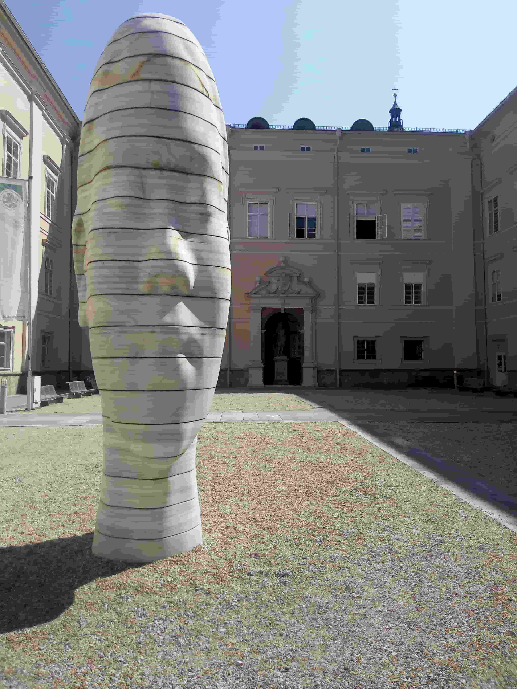

Salzburg, Austria
Austria · Salzburg
Nestled between the Alps and the Salzach River, Salzburg is a city where history, architecture, and culture come together in a distinctive setting. Its historic center, recognized as a UNESCO World Heritage Site, is filled with elegant baroque buildings, picturesque squares, and narrow streets that reflect the city's rich past. Salzburg is also closely associated with Wolfgang Amadeus Mozart, whose legacy remains an important part of its cultural identity. From the impressive cityscape to the carefully designed paths and flower displays of Mirabell Gardens, this collection presents my personal photographs and memories of exploring one of Austria's most remarkable cities.

City Views
Discover Salzburg's historic streets, beautiful architecture, and scenic views of the surrounding Alps.
Explore Photos ↗
Mirabell Gardens
Explore the elegant gardens, colorful flower displays, fountains, and peaceful pathways of Mirabell Gardens.
Explore Photos ↗